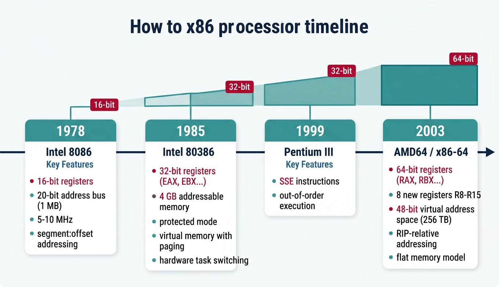
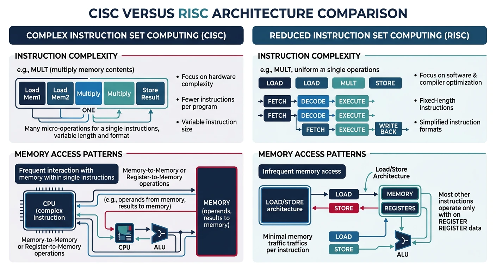
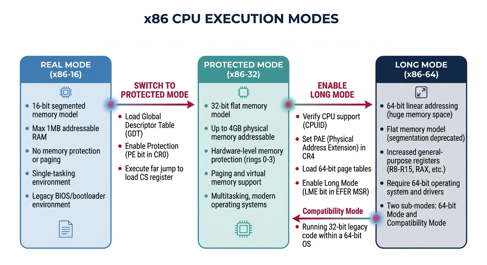
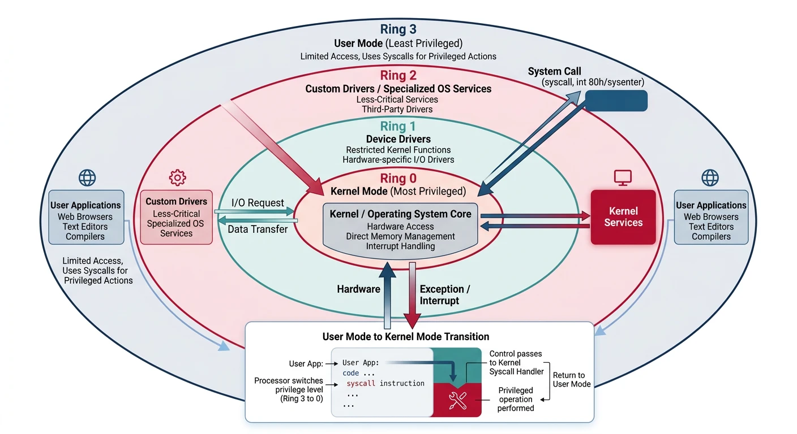
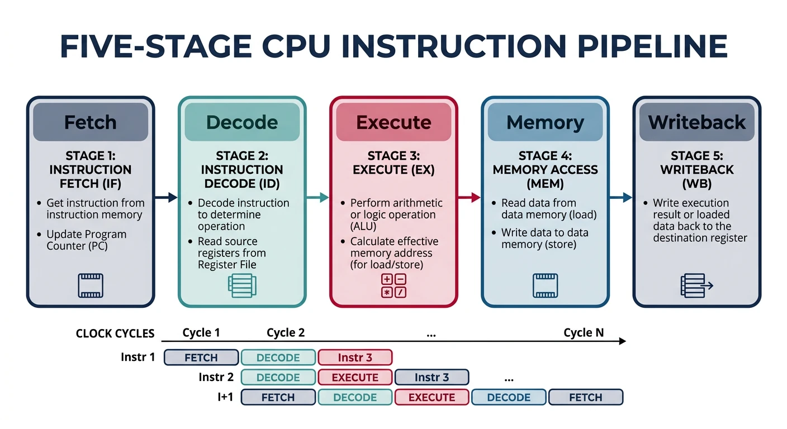

x86 Assembly Series Part 2: x86 CPU Architecture Overview
February 6, 2026Wasil Zafar30 min read
Explore the evolution of x86 from the 8086 to modern x86-64 processors. Understand CISC philosophy, execution modes, privilege rings, CPU pipelines, and the microcode layer that powers modern processors.
Historical Context: The x86 architecture has maintained backward compatibility for over 45 years, making it one of the most successful processor architectures in computing history.
The 8086 established the instruction set that all x86 processors still support today.
IA-32: The 32-bit Era (80386+)
The 80386 (1985) introduced 32-bit computing to x86:

x86 architecture evolution timeline — from the 16-bit 8086 (1978) through 32-bit 80386 to modern 64-bit x86-64, showing key milestones in register width, addressing, and features
32-bit registers (EAX, EBX, etc.)
4 GB addressable memory
Protected mode with ring-based security
Virtual memory with paging
Hardware task switching
x86-64 / AMD64 (2003)
AMD's bold move to extend x86 to 64-bit (rather than adopting Intel's Itanium) gave us today's dominant architecture:
8 new registers: R8-R15 (finally, more than 8 GPRs!)
Virtual address space: 48-bit (256 TB) currently, 57-bit with LA57
RIP-relative addressing: Position-independent code is easy
Flat memory model: No more segment:offset headaches (mostly)
Single OS model: Ring 0 and Ring 3 only
Register Naming Convention:
64-bit 32-bit 16-bit 8-bit (low) 8-bit (high)
RAX EAX AX AL AH
RBX EBX BX BL BH
RCX ECX CX CL CH
RDX EDX DX DL DH
RSI ESI SI SIL -
RDI EDI DI DIL -
R8 R8D R8W R8B -
R9 R9D R9W R9B -
...and so on for R10-R15
Long Mode Sub-Modes
Sub-Mode
Description
Use Case
64-bit Mode
Full 64-bit OS and applications
Modern operating systems
Compatibility Mode
Run 32-bit apps on 64-bit OS
WoW64 (Windows on Windows 64)
CISC Philosophy
CISC vs RISC
Comparison
Architecture Philosophies
CISC (x86)
RISC (ARM)
Complex, variable-length instructions
Simple, fixed-length instructions
Memory operands in most instructions
Load/Store architecture
Hardware microcode
Hardwired control
Fewer registers
Many registers
Design Implications
CISC architecture profoundly affects how you write and think about assembly:

CISC vs RISC design philosophies — x86 CISC uses complex variable-length instructions with direct memory operands, while RISC uses simple fixed-length load/store instructions
Memory Operands Anywhere
Unlike RISC (load/store), x86 allows memory operands directly in arithmetic:
; CISC style - memory in arithmetic
add [count], 5 ; Add 5 directly to memory location
mul dword [factor] ; Multiply EAX by memory value
; RISC equivalent would need:
ldr r1, [count] ; Load
add r1, r1, #5 ; Compute
str r1, [count] ; Store
Rich Instruction Set
; String operations
rep movsb ; Copy RCX bytes from RSI to RDI
rep stosq ; Fill RCX quadwords at RDI with RAX
repnz scasb ; Search for AL in string at RDI
; Complex addressing
mov eax, [rbx + rsi*4 + 16] ; Array[i] with base offset
; Atomic operations
lock cmpxchg [mutex], ecx ; Compare-and-swap for synchronization
lock xadd [counter], eax ; Atomic fetch-and-add
Trade-offs for Assembly Programmers
Advantage
Disadvantage
Fewer instructions for same task
Complex instruction encoding (1-15 bytes)
Powerful addressing modes
Harder to predict timing
Rich built-in operations (REP, LOOP)
Microcode overhead for complex ops
Direct memory manipulation
Limited registers (historical)
Modern Reality: Today's x86 CPUs are RISC internally. The decoder translates complex CISC instructions into simple micro-operations (μops) that execute on a RISC-like core. You get CISC convenience with RISC performance.
CPU Execution Modes
Key Insight: Modern x86 processors boot in Real Mode (for BIOS compatibility), then transition to Protected Mode (for 32-bit OS) or Long Mode (for 64-bit OS). Understanding these modes is essential for bootloader and kernel development.
x86 CPU Execution Modes
graph TD
RM["Real Mode 16-bit | 1 MB Address Space No Protection | Direct HW Access"]
PM["Protected Mode 32-bit | 4 GB Address Space Ring Protection | Paging"]
LM["Long Mode (x86-64) 64-bit | 256 TB Virtual 4-Level Paging | RIP-relative"]
VM["Virtual 8086 Mode Real Mode emulation inside Protected Mode"]
RM -->|"Set PE bit in CR0"| PM
PM -->|"Set LME in EFER + PG"| LM
PM -->|"Set VM flag"| VM
VM -->|"Clear VM flag"| PM
style RM fill:#fff5f5,stroke:#BF092F
style PM fill:#f0f4f8,stroke:#16476A
style LM fill:#e8f4f4,stroke:#3B9797
style VM fill:#f8f9fa,stroke:#666
Real Mode
Mode
Real Mode Characteristics
Address Space: 1 MB (20-bit addresses)
Segmentation: Segment × 16 + Offset
Protection: None (direct hardware access)
Use Case: BIOS, bootloaders, DOS compatibility
Protected Mode
Introduced with the 80386, Protected Mode is where 32-bit operating systems live:

x86 CPU execution modes — Real Mode (16-bit, 1MB), Protected Mode (32-bit, 4GB with paging), and Long Mode (64-bit, 256TB virtual address space)
Global Descriptor Table (GDT)
The GDT defines memory segments with protection attributes:
GDT Entry (8 bytes each):
┌──────────┬─────────┬─────────┬──────────┬──────────┐
│ Base[24:31] │ Flags │ Access │ Base[16:23] │ Base[0:15] │
│ Limit[16:19]│ (G,D,L,0) │ (P,DPL,S..)│ │ Limit[0:15] │
└──────────┴─────────┴─────────┴──────────┴──────────┘
Typical GDT layout:
Index 0: Null descriptor (required)
Index 1: Kernel Code (Ring 0, Execute)
Index 2: Kernel Data (Ring 0, Read/Write)
Index 3: User Code (Ring 3, Execute)
Index 4: User Data (Ring 3, Read/Write)
Index 5: TSS (Task State Segment)
Entering Protected Mode (Bootloader Pattern)
; Minimal GDT for entering protected mode
gdt_start:
dq 0 ; Null descriptor (index 0)
gdt_code: ; Code segment descriptor (index 1)
dw 0xFFFF ; Limit 0-15
dw 0 ; Base 0-15
db 0 ; Base 16-23
db 10011010b ; Access: Present, Ring 0, Code, Readable
db 11001111b ; Flags: 4K granularity, 32-bit
db 0 ; Base 24-31
gdt_data: ; Data segment descriptor (index 2)
dw 0xFFFF
dw 0
db 0
db 10010010b ; Access: Present, Ring 0, Data, Writable
db 11001111b
db 0
gdt_end:
gdt_descriptor:
dw gdt_end - gdt_start - 1 ; GDT size - 1
dd gdt_start ; GDT address
; Switch to protected mode
enter_protected:
cli ; Disable interrupts
lgdt [gdt_descriptor] ; Load GDT
mov eax, cr0
or eax, 1 ; Set PE (Protection Enable) bit
mov cr0, eax
jmp 0x08:protected_start ; Far jump to flush pipeline, load CS
Protected Mode Gotchas:
Can't use BIOS interrupts (they're 16-bit real mode code)
Must set up an IDT before enabling interrupts
Segment registers hold selectors, not segment bases
The far jump after setting CR0.PE is mandatory to load CS properly
Long Mode (64-bit)
Long Mode is the native mode for 64-bit x86 processors. You must transition through Protected Mode to reach it:
Entering Long Mode (From Protected Mode)
; Prerequisites:
; 1. Already in Protected Mode with paging disabled
; 2. PAE (Physical Address Extension) enabled
; 3. 4-level page tables set up
enter_long_mode:
; Enable PAE in CR4
mov eax, cr4
or eax, (1 << 5) ; Set PAE bit
mov cr4, eax
; Load PML4 table address into CR3
mov eax, pml4_table ; Page-Map Level-4 Table
mov cr3, eax
; Enable Long Mode in EFER MSR
mov ecx, 0xC0000080 ; EFER MSR number
rdmsr
or eax, (1 << 8) ; Set LME (Long Mode Enable)
wrmsr
; Enable paging (this activates Long Mode)
mov eax, cr0
or eax, (1 << 31) ; Set PG (Paging) bit
mov cr0, eax
; Far jump to 64-bit code segment
jmp 0x08:long_mode_start
[bits 64]
long_mode_start:
; Now in 64-bit mode!
mov rsp, stack_top
call kernel_main
64-bit Addressing
Feature
32-bit Protected
64-bit Long
Virtual Address
32-bit (4 GB)
48-bit (256 TB) canonical
Physical Address
32-bit (36 with PAE)
52-bit (4 PB)
Page Tables
2-level (or 3 with PAE)
4-level (5 with LA57)
Segments
Full segmentation
Flat model (FS/GS for TLS)
Canonical Addresses: In 64-bit mode, only 48 bits of address are used. Bits 48-63 must be sign-extended (all 0s or all 1s). This creates a "canonical hole" in the middle of the address space - the kernel lives in high addresses (0xFFFF...), user space in low addresses (0x0000...).
Privilege Rings
The Ring Model (0-3)
Security
x86 Privilege Levels
Ring 0 (Kernel): Full hardware access, OS kernel code
Ring 1: Device drivers (rarely used)
Ring 2: Device drivers (rarely used)
Ring 3 (User): Application code, restricted access
Most modern OSes use only Ring 0 (kernel) and Ring 3 (user), with hypervisors sometimes utilizing Ring -1 (hardware virtualization).
x86 Privilege Ring Model
graph TD
R0["Ring 0 — Kernel Full hardware access All instructions allowed"]
R1["Ring 1 — Device Drivers (Rarely used in modern OS)"]
R2["Ring 2 — Device Drivers (Rarely used in modern OS)"]
R3["Ring 3 — User Applications Restricted access Must use syscalls for I/O"]
R0 --- R1
R1 --- R2
R2 --- R3
R3 -->|"INT 0x80 / SYSCALL"| R0
R0 -->|"IRET / SYSRET"| R3
style R0 fill:#BF092F,stroke:#132440,color:#fff
style R1 fill:#16476A,stroke:#132440,color:#fff
style R2 fill:#3B9797,stroke:#132440,color:#fff
style R3 fill:#e8f4f4,stroke:#3B9797
Ring Transitions
Code transitions between privilege levels through controlled gates:

x86 privilege ring model — Ring 0 (kernel) and Ring 3 (user) transitions via syscall/sysret, interrupt gates, and call gates
User to Kernel (Ring 3 → Ring 0)
; Modern syscall instruction (64-bit Linux)
; Arguments: RDI, RSI, RDX, R10, R8, R9
; Syscall number: RAX
; Return value: RAX
mov rax, 1 ; sys_write
mov rdi, 1 ; fd = stdout
mov rsi, message ; buffer
mov rdx, 13 ; length
syscall ; RING 3 → RING 0 → RING 3
; What happens:
; 1. CPU saves RIP to RCX, RFLAGS to R11
; 2. Loads kernel CS:RIP from STAR/LSTAR MSRs
; 3. Sets CPL to 0 (kernel mode)
; 4. Kernel handler executes
; 5. sysret instruction returns to user mode
Transition Mechanisms
Mechanism
Direction
Use Case
syscall / sysret
User ↔ Kernel
Fast system calls (64-bit)
sysenter / sysexit
User ↔ Kernel
Fast system calls (32-bit)
int 0x80
User → Kernel
Legacy Linux syscall
int 0x2e
User → Kernel
Legacy Windows syscall
Hardware interrupt
Any → Kernel
Device events, timer
Exception (fault/trap)
Any → Kernel
Page fault, divide error
Exercise: Observe Ring Transitions
# Count syscalls made by a program
strace -c ls /
# Example output:
# % time calls syscall
# 67.50% 101 read
# 12.00% 43 write
# 5.00% 25 openat
# ...each is a Ring 3 → 0 → 3 transition!
CPU Internals
Instruction Pipeline
Modern CPUs process instructions through a multi-stage pipeline to increase throughput:

Classic 5-stage CPU instruction pipeline — Fetch, Decode, Execute, Memory Access, and Writeback stages operating in parallel for increased throughput
Classic 5-Stage Pipeline:
┌───────┐ ┌───────┐ ┌───────┐ ┌───────┐ ┌───────┐
│ Fetch │ → │Decode │ → │Execute│ → │Memory │ → │Write- │
│ │ │ │ │ │ │ Access│ │ back │
└───────┘ └───────┘ └───────┘ └───────┘ └───────┘
Clock 1 2 3 4 5 6 7 8 9
Inst1 IF ID EX MEM WB
Inst2 IF ID EX MEM WB
Inst3 IF ID EX MEM WB
Inst4 IF ID EX MEM WB
Throughput: 1 instruction per cycle (ideally)
Pipeline Stages Explained
Stage
Action
Relevant to Assembly
Fetch (IF)
Read instruction bytes from memory/cache
Code alignment matters for cache lines
Decode (ID)
Parse instruction, read registers
Simpler instructions decode faster
Execute (EX)
Perform computation (ALU, FPU, etc.)
Some instructions take multiple cycles
Memory (MEM)
Load/store data from memory
Memory operations are slow (cache helps)
Writeback (WB)
Write results to registers
Register dependencies cause stalls
Pipeline Hazards:
Data hazard:add rax, rbx; sub rcx, rax — second instruction needs result from first
Control hazard: Branches disrupt the pipeline (branch prediction helps)
Structural hazard: Multiple instructions need same hardware unit
Instruction Decoder
x86's variable-length instructions (1-15 bytes) create a decoding challenge:
Assembly Optimization Tip: Prefer instructions that decode to single µops. Avoid complex instructions like LOOP (which decodes to multiple µops and is slower than a manual DEC + JNZ sequence).
Microcode Layer
Complex CISC instructions are internally translated to simple RISC-like operations called micro-operations (µops):
# Profile µops on Intel
perf stat -e uops_issued.any,uops_executed.thread ./program
# Sample output:
# 1,500,000,000 uops_issued.any
# 1,200,000,000 uops_executed.thread
# 1.0 seconds elapsed
# More µops issued than executed = speculation wasted on mispredicts
Security: Microcode updates can patch CPU vulnerabilities like Spectre and Meltdown. Check your current microcode version with: cat /proc/cpuinfo | grep microcode on Linux.
Next Steps
With a solid understanding of CPU architecture, we'll now dive deep into the registers—the CPU's working memory for assembly programming.
Continue the Series
Part 1: Assembly Language Fundamentals & Toolchain Setup
Learn what assembly really is, the build pipeline, and write your first programs.